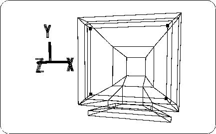
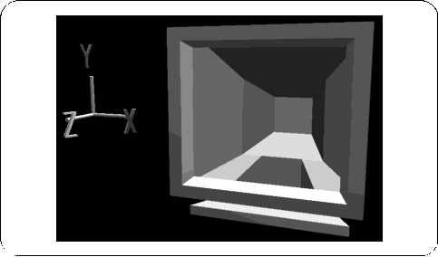
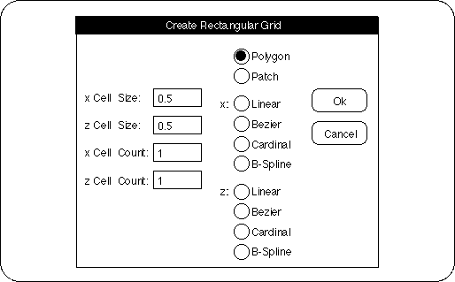
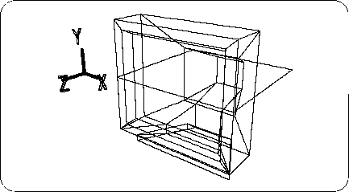
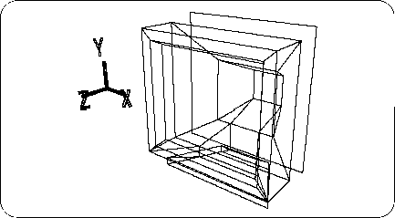
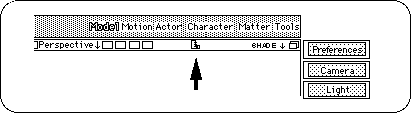
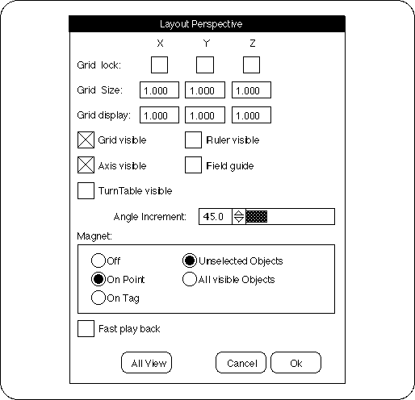
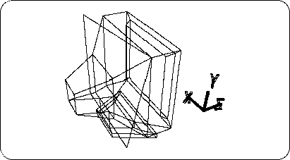

Return to previous page | Return to menu | Go to next page
This section introduces the Magnet function that attracts points and points, which is useful for modeling.
First, load the TV monitor model (SATURN_TV_SET) created in Chapter 2 before using the Magnet function.
[Get] → [Element] → [MODELS]
After loading, it should look like the figure below (Figure 5-9).
Change from OBJ mode to TAG mode, and add TAG to the points in the figure (Figure 5-10).

Then
[Delete] → [Selection]
Please run the. (Do not remove TAG yet)
The polygon corresponding to the CRT should have disappeared (Figure 5-11).

Then
[Get] → [Primitive] → [Grid]
please choose. The “Create Rectangular Grid” window will appear (Figure 5-12).

Enter “0.5” for “X Cell Size”, “0.5” for “Z Cell Size”, “1” for “X Cell Count”, and “1” for “Z Cell Count”.
Make sure “Polygon” is checked and click “OK”.
Then, the following figure appears, and one square polygon appears (Figure 5-13).

In the future, use [Get]-> [Primitive]-> [Grid] to get a single polygon like this.
I think that one polygon is currently selected, but here select OBJ mode and click the corner of the triangle in the “Rot” icon.
When the numeric input window opens, enter X: 90, Y: 0, Z: 0 and click “Set”. The selected single polygon rotates as shown below (Figure 5-14).

[Effect] → [Freeze] → [Rotation]
Please run the.
The next thing to do is to fit this single polygon into the TV monitor with a hole. First, in this step, the adsorption function is set.
There is a ruler shaped icon in the bar on the Perspective screen (Figure 5-15).

Clicking this icon opens the “Layout Perspective” window as shown below (Figure 5-16).

There is an item "Magnet" in this.
I think that “Off” is checked by default, but check “On Point”. Make sure that “Unselected Objects” on the right is checked and click “OK”.
In the screen that has been set, try to pick an arbitrary point on a single polygon with the "M" key + any mouse button . Then, the point moves as shown in the figure (Figure 5-17).

If you try to move it, undo it for the time being ( "U" key + left mouse button ).
As you can see, the Magnet function is a function that attaches the picked point to a certain point. However, please note that this function works only in the set window.